We need to slice the quads of the cube into tris, and the first solution to do that is probably to slice 4 faces in the same direction and the other two in a way or another. This is pretty irregular and still not elegant to generate. Instead we can use the slices made by using two equilateral triangles.

This cube opened in a T shape looks like this:
|---|---|---|
| \ | \ | / |
|---|---|---|
| \ |
|---|
| / |
|---|
| / |
|---|
Three faces that make one of the triangles are the three faces with positive axis, and the other triangle has the the other three faces with negative faces. (capital letter means positive)
|---|---|---|
| Z | x | z |
|---|---|---|
| Y |
|---|
| X |
|---|
| y |
|---|
and the indices of the vertices are
2---6---7---3
| Z | x | z |
0---4---5---1
| Y |
0---1
| X |
2---3
| y |
6---7
The faces are now sliced, but there needs to be an order for the tris, and for every tris, an order for the vertices, so I came up with this:
start // 6 faces, 12 tris
starting from positive triangle // 3 faces, 6 tris
starting from x axis // 1 face, 2 tris
the tris inside the triangle // 1 tris, 3 vertices
the 90° vertex
continuing clockwise
the other tris on the same face
y axis
z axis
negative triangle
end
Doing this by hand led to this:
X 012 321
Y 041 514
Z 024 642
x 756 465
y 763 236
z 735 153
The first thing to note, is that the negative faces are just the positive faces but with a bitwise not operator applied and the 2nd and 3rd vertices swapped
Example:
X 012 (000, 001, 010); 321 (011, 010, 001)
x 756 (111, 101, 110); 465 (100, 110, 101)
We can remove the negative faces from the list and for all the vertices remaining, we add another vertex which is (~v.x, ~v.z, ~v.y).
We are left with 6 constant tris:
X 012 321
Y 041 512
Z 024 642
As you may notice, the second tris of a face has for X the sum of Y and Z of the other tris in the same face, and Z and Y are the same, but inverted (v.y + v.z, v.z, v.y).
So now the ones that are left are
X 012
Z 024
Y 041
which in binary are
X 000, 001, 010
Z 000, 010, 100
Y 000, 100, 001
So to calculate even these three tris we can run a counter that goes from 0 to 2, (number of dimensions - 1), and for the X just put 0, for the Y 1 << counter, and for the Z, Y << 1, but when it reaches 1000, it loops back to 1.
All this code is C# is:
Coord3[] verts;
Tris[] tris;
public CubeShape(Coord3 startPos, int size) {
int l = size / 2;
verts = new Coord3[8];
for (int i = 0; i < 8; i++) {
verts[i] = new Coord3((i & 4) != 0 ? l : -l, (i & 2) != 0 ? l : -l, (i & 1) != 0 ? l : -l) + startPos;
}
tris = new Tris[12];
int vertCount = 0;
void AddVert(int one, int two, int three) => tris[vertCount++] = new Tris(verts[one], verts[two], verts[three]);
for (int i = 0; i < 3; i++) {
int v1 = 1 << i;
int v2 = v1 == 4 ? 1 : v1 << 1;
AddVert(0, v1, v2);
AddVert(v1 + v2, v2, v1);
AddVert(7, 7 - v2, 7 - v1);
AddVert(7 - (v1 + v2), 7 - v1, 7 - v2);
// i'm using [7 - ] instead of [~] because the only bits that need to be affected are the least relevant three
// and in C#, that's the only way to do that.
}
}
This works in my 3D rendering engine.
I don't know for sure if all the tris are actually going clockwise, and I don't really have a way to test it for engines like Unity, which require that.
In my head everything should work...
NOTE:
This solution isn't really helpful for anyone, it is slower than just writing down the constant values and pretty unclear at first glance. Looking back at it, it is not even too elegant. But this was a fun little piece of code that I wrote in about 2-3 hours, and wanted to share it, since I couldnt find anything like this on the Internet.